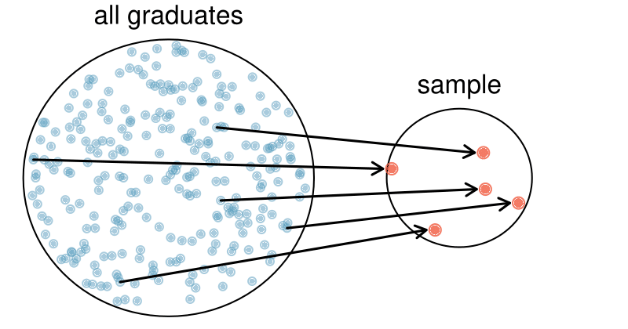
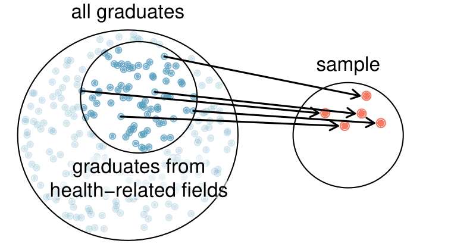
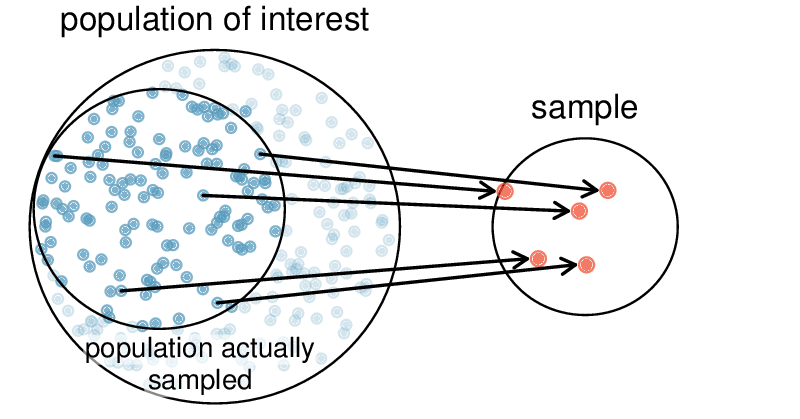
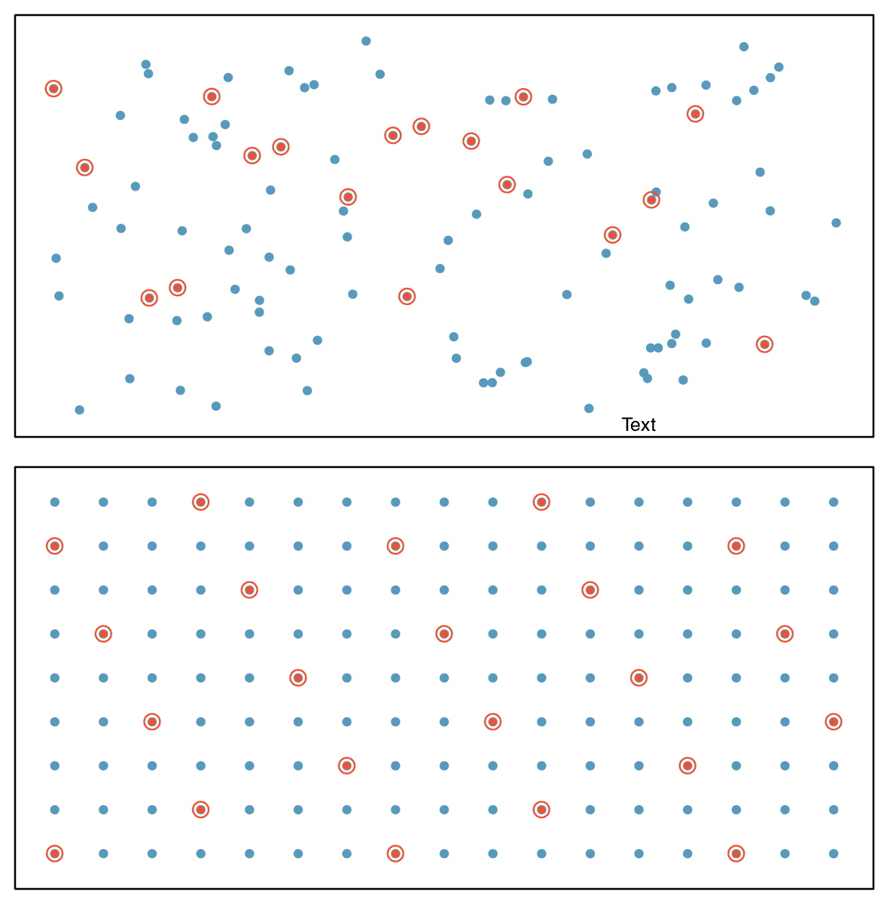
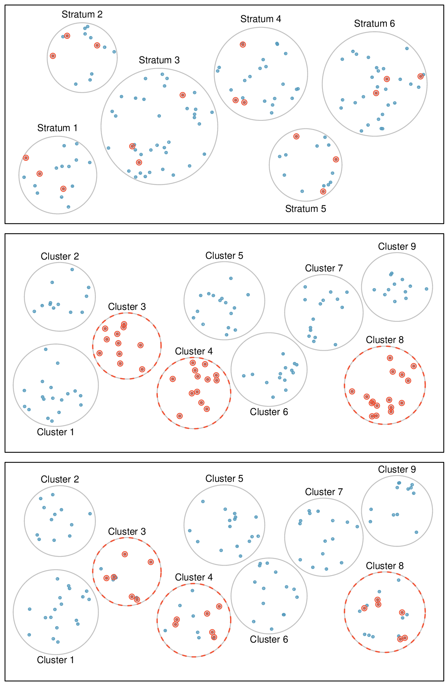

Section1.4Observational studies and sampling strategies
You have probably read or heard claims from many studies and polls. A background in statistical reasoning will help you assess the validity of such claims. Some of the big questions we address in this section include:
If a study finds a relationship between two variables, such as eating chocolate and positive health outcomes, is it reasonable to conclude eating chocolate improves health outcomes?
How do opinion polls work? How do research organizations collect the data, and what types of bias should we look out for?
Objectives:Learning objectives
Identify possible confounding factors in a study and explain, in context, how they could confound.
Distinguish among and describe a convenience sample, a volunteer sample, and a random sample.
Identify and describe the effects of different types of bias in sample surveys, including undercoverage, non-response, and response bias.
Identify and describe how to implement different random sampling methods, including simple, systematic, stratified, and cluster.
Recognize the benefits and drawbacks of choosing one sampling method over another.
Understand when it valid to generalize and to what population that generalization can be made.
Subsection1.4.1Observational studies
Generally, data in observational studies are collected only by monitoring what occurs, while experiments require the primary explanatory variable in a study be assigned for each subject by the researchers.
Making causal conclusions based on experiments is often reasonable. However, making the same causal conclusions based on observational data is treacherous and is not recommended. Observational studies are generally only sufficient to show associations.
Checkpoint1.4.1.
Suppose an observational study tracked sunscreen use and skin cancer, and it was found people who use sunscreen are more likely to get skin cancer than people who do not use sunscreen. Does this mean sunscreen causes skin cancer? 1
No. See the paragraph following the exercise for an explanation.
Some previous research tells us that using sunscreen actually reduces skin cancer risk, so maybe there is another variable that can explain this hypothetical association between sunscreen usage and skin cancer. One important piece of information that is absent is sun exposure. Sun exposure is what is called a confounding variable (also called a lurking variable, confounding factor, or a confounder).
Confounding variable.
A confounding variable is a variable that is associated with both the explanatory and response variables. Because of the confounding variable’s association with both variables, we do not know if the response is due to the explanatory variable or due to the confounding variable.
Sun exposure is a confounding factor because it is associated with both the use of sunscreen and the development of skin cancer. People who are out in the sun all day are more likely to use sunscreen, and people who are out in the sun all day are more likely to get skin cancer. Research shows us the development of skin cancer is due to the sun exposure. The variables of sunscreen usage and sun exposure are confounded, and without this research, we would have no way of knowing which one was the true cause of skin cancer.
Example1.4.2.
In a study that followed 1,169 non-diabetic men and women who had been hospitalized for a first heart attack, the people that reported eating chocolate had increased survival rate over the next 8 years than those that reported not eating chocolate. 2
Also, those who ate more chocolate also tended to live longer on average. The researched controlled for several confounding factors, such as age, physical activity, smoking, and many other factors. Can we conclude that the consumption of chocolate caused the people to live longer?
Solution.
This is an observational study, not a controlled randomized experiment. Even though the researchers controlled for many possible variables, there may still be other confounding factors. (Can you think of any that weren’t mentioned?) While it is possible that the chocolate had an effect, this study cannot prove that chocolate increased the survival rate of patients.
Example1.4.3.
The authors who conducted the study did warn in the article that additional studies would be necessary to determine whether the correlation between chocolate consumption and survival translates to any causal relationship. That is, they acknowledged that there may be confounding factors. One possible confounding factor not considered was mental health. In context, explain what it would mean for mental health to be a confounding factor in this study.
Solution.
Mental health would be a confounding factor if, for example, people with better mental health tended to eat more chocolate, and those with better mental health also were less likely to die within the 8 year study period. Notice that if better mental health were not associated with eating more chocolate, it would not be considered a confounding factor since it wouldn’t explain the observed associated between eating chocolate and having a better survival rate. If better mental health were associated only with eating chocolate and not with a better survival rate, then it would also not be confounding for the same reason. Only if a variable that is associated with both the explanatory variable of interest (chocolate) and the outcome variable in the study (survival during the 8 year study period) can it be considered a confounding factor.
While one method to justify making causal conclusions from observational studies is to exhaust the search for confounding variables, there is no guarantee that all confounding variables can be examined or measured.
In the same way, the county data set is an observational study with confounding variables, and its data cannot be used to make causal conclusions.
Checkpoint1.4.4.
Figure 1.2.11 shows a negative association between the homeownership rate and the percentage of multi-unit structures in a county. However, it is unreasonable to conclude that there is a causal relationship between the two variables. Suggest one or more other variables that might explain the relationship visible in Figure 1.2.11. 3
Answers will vary. Population density may be important. If a county is very dense, then this may require a larger fraction of residents to live in multi-unit structures. Additionally, the high density may contribute to increases in property value, making homeownership infeasible for many residents.
Observational studies come in two forms: prospective and retrospective studies. A prospective study identifies individuals and collects information as events unfold. For instance, medical researchers may identify and follow a group of similar individuals over many years to assess the possible influences of behavior on cancer risk. One example of such a study is The Nurses’ Health Study, started in 1976 and expanded in 1989. 4
This prospective study recruits registered nurses and then collects data from them using questionnaires. Retrospective studies collect data after events have taken place, e.g. researchers may review past events in medical records. Some data sets, such as county, may contain both prospectively- and retrospectively-collected variables. Local governments prospectively collect some variables as events unfolded (e.g. retails sales) while the federal government retrospectively collected others during the 2010 census (e.g. county population counts).
Subsection1.4.2Sampling from a population
We might try to estimate the time to graduation for Duke undergraduates in the last 5 years by collecting a sample of students. All graduates in the last 5 years represent the population, and graduates who are selected for review are collectively called the sample. The goal is to use information from the sample to generalize or make an inference to the population. In order to be able to generalize, we must randomly select a sample from the population of interest. The most basic type of random selection is equivalent to how raffles are conducted. For example, in selecting graduates, we could write each graduate’s name on a raffle ticket and draw 100 tickets. The selected names would represent a random sample of 100 graduates.

Figure1.4.5.In this graphic, five graduates are randomly selected from the population to be included in the sample.
Why pick a sample randomly? Why not just pick a sample by hand? Consider the following scenario.
Example1.4.6.
Suppose we ask a student who happens to be majoring in nutrition to select several graduates for the study. What kind of students do you think she might select? Do you think her sample would be representative of all graduates?
Solution.
Perhaps she would pick a disproportionate number of graduates from health-related fields. Or perhaps her selection would be well-representative of the population. When selecting samples by hand, we run the risk of picking a biased sample, even if that bias is unintentional or difficult to discern.

Figure1.4.7.Instead of sampling from all graduates equally, a nutrition major might inadvertently pick graduates with health-related majors disproportionately often.
If the student majoring in nutrition picked a disproportionate number of graduates from health-related fields, this would introduce undercoverage bias into the sample. Undercoverage bias occurs when some individuals of the population are inherently less likely to be included in the sample than others, making the sample not representative of the population. In the example, this bias creates a problem because a degree in health-related fields might take more or less time to complete than a degree in other fields. Suppose that it takes longer. Since graduates from other fields would be less likely to be in the sample, the undercoverage bias would cause her to overestimate the parameter.
Sampling randomly resolves the problem of undercoverage bias, if the sample is randomly selected from the entire population of interest. If the sample is randomly selected from only a subset of the population, say, only graduates from health-related fields, then the sample will not be representative of the population of interest. Generalizations can only be made to the population from which the sample is randomly selected.
The most basic random sample is called a simple random sample, which is equivalent to using a raffle to select cases. This means that each case in the population has an equal chance of being included and there is no implied connection between the cases in the sample.
A common downfall is a convenience sample, where individuals who are easily accessible are more likely to be included in the sample. For instance, if a political survey is done by stopping people walking in the Bronx, this will not represent all of New York City. It is often difficult to discern what sub-population a convenience sample represents.

Figure1.4.8.Due to the possibility of non-response, surveys studies may only reach a certain group within the population. It is difficult, and often times impossible, to completely fix this problem.
Similarly, a volunteer sample is one in which people’s responses are solicited and those who choose to participate, respond. This is a problem because those who choose to participate may tend to have different opinions than the rest of the population, resulting in a biased sample.
Checkpoint1.4.9.
We can easily access ratings for products, sellers, and companies through websites. These ratings are based only on those people who go out of their way to provide a rating. If 50% of online reviews for a product are negative, do you think this means that 50% of buyers are dissatisfied with the product? 5
Answers will vary. From our own anecdotal experiences, we believe people tend to rant more about products that fell below expectations than rave about those that perform as expected. For this reason, we suspect there is a negative bias in product ratings on sites like Amazon. However, since our experiences may not be representative, we also keep an open mind.
The act of taking a random sample helps minimize bias; however, bias can crop up in other ways. Even when people are picked at random, e.g. for surveys, caution must be exercised if the non-response is high. For instance, if only 30% of the people randomly sampled for a survey actually respond, then it is unclear whether the results are representative of the entire population. This non-response bias can skew results.
Even if a sample has no undercoverage bias and no non-response bias, there is an additional type of bias that often crops up and undermines the validity of results, known as response bias. Response bias refers to a broad range of factors that influence how a person responds, such as question wording, question order, and influence of the interviewer. This type of bias can be present even when we collect data from an entire population in what is called a census. Because response bias is often subtle, one must pay careful attention to how questions were asked when attempting to draw conclusions from the data.
Example1.4.10.
Suppose a high school student wants to investigate the student body’s opinions on the food in the cafeteria. Let’s assume that she manages to survey every student in the school. How might response bias arise in this context?
Solution.
There are many possible correct answers to this question. For example, students might respond differently depending upon who asks the question, such as a school friend or someone who works in the cafeteria. The wording of the question could introduce response bias. Students would likely respond differently if asked “Do you like the food in the cafeteria?” versus “The food in the cafeteria is pretty bad, don’t you think?”
Watch out for bias.
Undercoverage bias, non-response bias, and response bias can still exist within a random sample. Always determine how a sample was chosen, ask what proportion of people failed to respond, and critically examine the wording of the questions.
When there is no bias in a sample, increasing the sample size tends to increase the precision and reliability of the estimate. When a sample is biased, it may be impossible to decipher helpful information from the data, even if the sample is very large.
Checkpoint1.4.11.
A researcher sends out questionnaires to 50 randomly selected households in a particular town asking whether or not they support the addition of a traffic light in their neighborhood. Because only 20% of the questionnaires are returned, she decides to mail questionnaires to 50 more randomly selected households in the same neighborhood. Comment on the usefulness of this approach. 6
The researcher should be concerned about non-response bias, and sampling more people will not eliminate this issue. The same type of people that did not respond to the first survey are likely not going to respond to the second survey. Instead, she should make an effort to reach out to the households from the original sample that did not respond and solicit their feedback, possibly by going door-to-door.
Subsection1.4.3Simple, systematic, stratified, cluster, and multistage sampling
Almost all statistical methods for observational data rely on a sample being random and unbiased. When a sample is collected in a biased way, these statistical methods will not generally produce reliable information about the population.
The idea of a simple random sample was introduced in the last section. Here we provide a more technical treatment of this method and introduce four new random sampling methods: systematic, stratified, cluster, and multistage. 7
Multistage sampling is not part of the AP syllabus.
Figure 1.4.12 provides a graphical representation of simple versus systematic sampling while Figure 1.4.14 provides a graphical representation of stratified, cluster, and multistage sampling.

Figure1.4.12.Examples of simple random sampling and systematic sampling. In the top panel, simple random sampling was used to randomly select 18 cases. In the lower panel, systematic random sampling was used to select every 7th individual.
Simple random sampling is probably the most intuitive form of random sampling. Consider the salaries of Major League Baseball (MLB) players, where each player is a member of one of the league’s 30 teams. For the 2019 season, \(N\text{,}\) the population size or total number of players, is 750. To take a simple random sample of \(n
= 120\) of these baseball players and their salaries, we could number each player from 1 to 750. Then we could randomly select 120 numbers between 1 and 750 (without replacement) using a random number generator or random digit table. The players with the selected numbers would comprise our sample.
Two properties are always true in a simple random sample:
Each case in the population has an equal chance of being included in the sample.
Each group of \(n\) cases has an equal chance of making up the sample.
The statistical methods in this book focus on data collected using simple random sampling. Note that Property 2 — that each group of \(n\) cases has an equal chance making up the sample — is not true for the remaining four sampling techniques. As you read each one, consider why.
Though less common than simple random sampling, systematic sampling is sometimes used when there exists a convenient list of all of the individuals of the population. Suppose we have a roster with the names of all the MLB players from the 2019 season. To take a systematic random sample, number them from 1 to 750. Select one random number between 1 and 750 and let that player be the first individual in the sample. Then, depending on the desired sample size, select every 10th number or 20th number, for example, to arrive at the sample. 8
If we want a sample of size \(n = 150\text{,}\) it would make sense to select every 5th player since \(750/150 = 5\text{.}\) Suppose we randomly select the number 741. Then player 741, 746, 1, 6, 11, \(\cdots\) , 731, and 736 would make up the sample.
If there are no patterns in the salaries based on the numbering then this could be a reasonable method.
Example1.4.13.
A systematic sample is not the same as a simple random sample. Provide an example of a sample that can come from a simple random sample but not from a systematic random sample.
Solution.
Answers can vary. If we take a sample of size 3, then it is possible that we could sample players numbered 1, 2, and 3 in a simple random sample. Such a sample would be impossible from a systematic sample. Property 2 of simple random samples does not hold for other types of random samples.
Sometimes there is a variable that is known to be associated with the quantity we want to estimate. In this case, a stratified random sample might be selected. Stratified sampling is a divide-and-conquer sampling strategy. The population is divided into groups called strata. The strata are chosen so that similar cases are grouped together and a sampling method, usually simple random sampling, is employed to select a certain number or a certain proportion of the whole within each stratum. In the baseball salary example, the 30 teams could represent the strata; some teams have a lot more money (we’re looking at you, Yankees).

Figure1.4.14.Examples of stratified, cluster, and multistage sampling. In the top panel, stratified sampling was used: cases were grouped into strata, and then simple random sampling was employed within each stratum. In the middle panel, cluster sampling was used, where data were binned into nine cluster and three clusters were randomly selected. In the bottom panel, multistage sampling was used. Data were binned into the nine clusters, three of the cluster were randomly selected, and then six cases were randomly sampled in each of the three selected clusters.
Example1.4.15.
For this baseball example, briefly explain how to select a stratified random sample of size \(n = 120\text{.}\)
Solution.
Each team can serve as a stratum, and we could take a simple random sample of 4 players from each of the 30 teams, yielding a sample of 120 players.
Stratified sampling is inherently different than simple random sampling. For example, the stratified sampling approach described would make it impossible for the entire Yankees team to be included in the sample.
Example1.4.16.
Stratified sampling is especially useful when the cases in each stratum are very similar with respect to the outcome of interest. Why is it good for cases within each stratum to be very similar?
Solution.
We should get a more stable estimate for the subpopulation in a stratum if the cases are very similar. These improved estimates for each subpopulation will help us build a reliable estimate for the full population. For example, in a simple random sample, it is possible that just by random chance we could end up with proportionally too many Yankees players in our sample, thus overestimating the true average salary of all MLB players. A stratified random sample can assure proportional representation from each team.
Next, let’s consider a sampling technique that randomly selects groups of people. Cluster sampling is much like simple random sampling, but instead of randomly selecting individuals, we randomly select groups or clusters. Unlike stratified sampling, cluster sampling is most helpful when there is a lot of case-to-case variability within a cluster but the clusters themselves don’t look very different from one another. That is, we expect individual strata to be homogeneous (self-similar), while we expect individual clusters to be heterogeneous (diverse) with respect to the variable of interest.
Sometimes cluster sampling can be a more economical random sampling technique than the alternatives. For example, if neighborhoods represented clusters, this sampling method works best when each neighborhood is very diverse. Because each neighborhood itself encompasses diversity, a cluster sample can reduce the time and cost associated with data collection, because the interviewer would need only go to some of the neighborhoods rather than to all parts of a city, in order to collect a useful sample.
Multistage sampling, also called multistage cluster sampling, is a two (or more) step strategy. The first step is to take a cluster sample, as described above. Then, instead of including all of the individuals in these clusters in our sample, a second sampling method, usually simple random sampling, is employed within each of the selected clusters. In the neighborhood example, we could first randomly select some number of neighborhoods and then take a simple random sample from just those selected neighborhoods. As seen in Figure 1.4.14, stratified sampling requires observations to be sampled from every stratum. Multistage sampling selects observations only from those clusters that were randomly selected in the first step.
It is also possible to have more than two steps in multistage sampling. Each cluster may be naturally divided into subclusters. For example, each neighborhood could be divided into streets. To take a three-stage sample, we could first select some number of clusters (neighborhoods), and then, within the selected clusters, select some number of subclusters (streets). Finally, we could select some number of individuals from each of the selected streets.
Example1.4.17.
Suppose we are interested in estimating the proportion of students at a certain school that have part-time jobs. It is believed that older students are more likely to work than younger students. What sampling method should be employed? Describe how to collect such a sample to get a sample size of 60.
Solution.
Because grade level affects the likelihood of having a part-time job, we should take a stratified random sample. To do this, we can take a simple random sample of 15 students from each grade. This will give us equal representation from each grade. Note: in a simple random sample, just by random chance we might get too many students who are older or younger, which could make the estimate too high or too low. Also, there are no well-defined clusters in this example. We wouldn’t want to use the grades as clusters and sample everyone from a couple of the grades. This would create too large a sample and would not give us the nice representation from each grade afforded by the stratified random sample.
Example1.4.18.
Suppose we are interested in estimating the malaria rate in a densely tropical portion of rural Indonesia. We learn that there are 30 villages in that part of the Indonesian jungle, each more or less similar to the next. Our goal is to test 150 individuals for malaria. What sampling method should be employed?
Solution.
A simple random sample would likely draw individuals from all 30 villages, which could make data collection extremely expensive. Stratified sampling would be a challenge since it is unclear how we would build strata of similar individuals. However, multistage cluster sampling seems like a very good idea. First, we might randomly select half the villages, then randomly select 10 people from each. This would probably reduce our data collection costs substantially in comparison to a simple random sample and would still give us reliable information.
The methods of inference covered in this book generally only apply to simple random samples. More advanced analysis techniques are required for systematic, stratified, cluster, and multistage random sampling.
Subsection1.4.4Section summary
In an observational study, one must always consider the existence of confounding factors. A confounding factor is a “spoiler variable” that could explain an observed relationship between the explanatory variable and the response. Remember: For a variable to be confounding it must be associated with both the explanatory variable and the response variable.
When taking a sample from a population, avoid convenience samples and volunteer samples, which likely introduce bias. Instead, use a random sampling method.
Generalizations from a sample can be made to a population only if the sample is random. Furthermore, the generalization can be made only to the population from which the sample was randomly selected, not to a larger or different population.
Random sampling from the entire population of interest avoids the problem of undercoverage bias. However, response bias and non-response bias can be present in any type of sample, random or not.
In a simple random sample, every individual as well as every group of individuals has the same probability of being in the sample. A common way to select a simple random sample is to number each individual of the population from 1 to N. Using a random digit table or a random number generator, numbers are randomly selected without replacement and the corresponding individuals become part of the sample.
A systematic random sample involves choosing from of a population using a random starting point, and then selecting members according to a fixed, periodic interval (such as every 10th member).
A stratified random sample involves randomly sampling from every strata, where the strata should correspond to a variable thought to be associated with the variable of interest. This ensures that the sample will have appropriate representation from each of the different strata and reduces variability in the sample estimates.
A cluster random sample involves randomly selecting a set of clusters, or groups, and then collecting data on all individuals in the selected clusters. This can be useful when sampling clusters is more convenient and less expensive than sampling individuals, and it is an effective strategy when each cluster is approximately representative of the population.
Remember: Individual strata should be homogeneous (self-similar), while individual clusters should be heterogeneous (diverse). For example, if smoking is correlated with what is being estimated, let one stratum be all smokers and the other be all non-smokers, then randomly select an appropriate number of individuals from each strata. Alternately, if age is correlated with the variable being estimated, one could randomly select a subset of clusters, where each cluster has mixed age groups.
Exercises1.4.5Exercises
1.Course satisfaction across sections.
A large college class has 160 students. All 160 students attend the lectures together, but the students are divided into 4 groups, each of 40 students, for lab sections administered by different teaching assistants. The professor wants to conduct a survey about how satisfied the students are with the course, and he believes that the lab section a student is in might affect the student’s overall satisfaction with the course.
What type of study is this?
Suggest a sampling strategy for carrying out this study.
Solution.
Observational.
Use stratified sampling to randomly sample a fixed number of students, say 10, from each section for a total sample size of 40 students.
2.Housing proposal across dorms.
On a large college campus first-year students and sophomores live in dorms located on the eastern part of the campus and juniors and seniors live in dorms located on the western part of the campus. Suppose you want to collect student opinions on a new housing structure the college administration is proposing and you want to make sure your survey equally represents opinions from students from all years.
What type of study is this?
Suggest a sampling strategy for carrying out this study.
3.Internet use and life expectancy.
The following scatterplot was created as part of a study evaluating the relationship between estimated life expectancy at birth (as of 2014) and percentage of internet users (as of 2009) in 208 countries for which such data were available. 9
Describe the relationship between life expectancy and percentage of internet users.
What type of study is this?
State a possible confounding variable that might explain this relationship and describe its potential effect.
Solution.
Positive, non-linear, somewhat strong. Countries in which a higher percentage of the population have access to the internet also tend to have higher average life expectancies, however rise in life expectancy trails off before around 80 years old.
Observational.
Wealth: countries with individuals who can widely afford the internet can probably also afford basic medical care. (Note: Answers may vary.)
4.Stressed out, Part I.
A study that surveyed a random sample of otherwise healthy high school students found that they are more likely to get muscle cramps when they are stressed. The study also noted that students drink more coffee and sleep less when they are stressed.
What type of study is this?
Can this study be used to conclude a causal relationship between increased stress and muscle cramps?
State possible confounding variables that might explain the observed relationship between increased stress and muscle cramps.
5.Evaluate sampling methods.
A university wants to determine what fraction of its undergraduate student body support a new $25 annual fee to improve the student union. For each proposed method below, indicate whether the method is reasonable or not.
Survey a simple random sample of 500 students.
Stratify students by their field of study, then sample 10% of students from each stratum.
Cluster students by their ages (e.g. 18 years old in one cluster, 19 years old in one cluster, etc.), then randomly sample three clusters and survey all students in those clusters.
Solution.
Simple random sampling is okay. In fact, it’s rare for simple random sampling to not be a reasonable sampling method!
The student opin ions may vary by field of study, so the stratifying by this variable makes sense and would be reasonable.
Students of similar ages are probably going to have more similar opinions, and we want clusters to be diverse with respect to the outcome of interest, so this would not be a good approach. (Additional thought: the clusters in this case may also have very different numbers of people, which can also create unexpected sample sizes.)
6.Random digit dialing.
The Gallup Poll uses a procedure called random digit dialing, which creates phone numbers based on a list of all area codes in America in conjunction with the associated number of residential households in each area code. Give a possible reason the Gallup Poll chooses to use random digit dialing instead of picking phone numbers from the phone book.
7.Haters are gonna hate, study confirms.
A study published in the Journal of Personality and Social Psychology asked a group of 200 randomly sampled men and women to evaluate how they felt about various subjects, such as camping, health care, architecture, taxidermy, crossword puzzles, and Japan in order to measure their dispositional attitude towards mostly independent stimuli. Then, they presented the participants with information about a new product: a microwave oven. This microwave oven does not exist, but the participants didn’t know this, and were given three positive and three negative fake reviews. People who reacted positively to the subjects on the dispositional attitude measurement also tended to react positively to the microwave oven, and those who reacted negatively also tended to react negatively to it. Researchers concluded that “some people tend to like things, whereas others tend to dislike things, and a more thorough understanding of this tendency will lead to a more thorough understanding of the psychology of attitudes.” 10
What is (are) the response variable(s) in this study?
What is (are) the explanatory variable(s) in this study?
Does the study employ random sampling?
Is this an observational study or an experiment? Explain your reasoning.
Can we establish a causal link between the explanatory and response variables?
Can the results of the study be generalized to the population at large?
Solution.
The cases are 200 randomly sampled men and women.
The response variable is attitude towards a fictional microwave oven.
The explanatory variable is dispositional attitude.
Yes, the cases are sampled randomly.
This is an observational study since there is no random assignment to treatments.
No, we cannot establish a causal link between the explanatory and response variables since the study is observational.
Yes, the results of the study can be generalized to the population at large since the sample is random.
8.Family size.
Suppose we want to estimate household size, where a “household” is defined as people living together in the same dwelling, and sharing living accommodations. If we select students at random at an elementary school and ask them what their family size is, will this be a good measure of household size? Or will our average be biased? If so, will it overestimate or underestimate the true value?
9.Sampling strategies.
A statistics student who is curious about the relationship between the amount of time students spend on social networking sites and their performance at school decides to conduct a survey. Various research strategies for collecting data are described below. In each, name the sampling method proposed and any bias you might expect.
He randomly samples 40 students from the study’s population, gives them the survey, asks them to fill it out and bring it back the next day.
He gives out the survey only to his friends, making sure each one of them fills out the survey.
He posts a link to an online survey on Facebook and asks his friends to fill out the survey.
He randomly samples 5 classes and asks a random sample of students from those classes to fill out the survey.
Solution.
Simple random sample. Non-response bias, if only those people who have strong opinions about the survey responds his sample may not be representative of the population.
Convenience sample. Under coverage bias, his sample may not be representative of the population since it consists only of his friends. It is also possible that the study will have non-response bias if some choose to not bring back the survey.
Convenience sample. This will have a similar issues to handing out surveys to friends.
Multi-stage sampling. If the classes are similar to each other with respect to student composition this approach should not introduce bias, other than potential non-response bias.
10.Reading the paper.
Below are excerpts from two articles published in the NY Times:
An article titled Risks: Smokers Found More Prone to Dementia states the following: 11
“Researchers analyzed data from 23,123 health plan members who participated in a voluntary exam and health behavior survey from 1978 to 1985, when they were 50-60 years old. 23 years later, about 25% of the group had dementia, including 1,136 with Alzheimer’s disease and 416 with vascular dementia. After adjusting for other factors, the researchers concluded that pack-a-day smokers were 37% more likely than nonsmokers to develop dementia, and the risks went up with increased smoking; 44% for one to two packs a day; and twice the risk for more than two packs.”
Based on this study, can we conclude that smoking causes dementia later in life? Explain your reasoning.
Another article titled The School Bully Is Sleepy states the following: 12
“The University of Michigan study, collected survey data from parents on each child’s sleep habits and asked both parents and teachers to assess behavioral concerns. About a third of the students studied were identified by parents or teachers as having problems with disruptive behavior or bullying. The researchers found that children who had behavioral issues and those who were identified as bullies were twice as likely to have shown symptoms of sleep disorders.”
A friend of yours who read the article says, “The study shows that sleep disorders lead to bullying in school children.” Is this statement justified? If not, how best can you describe the conclusion that can be drawn from this study?